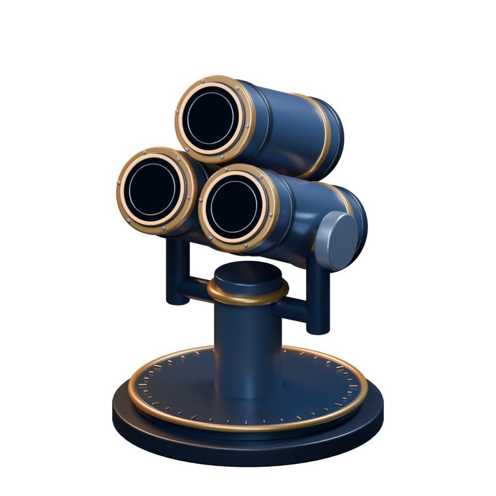
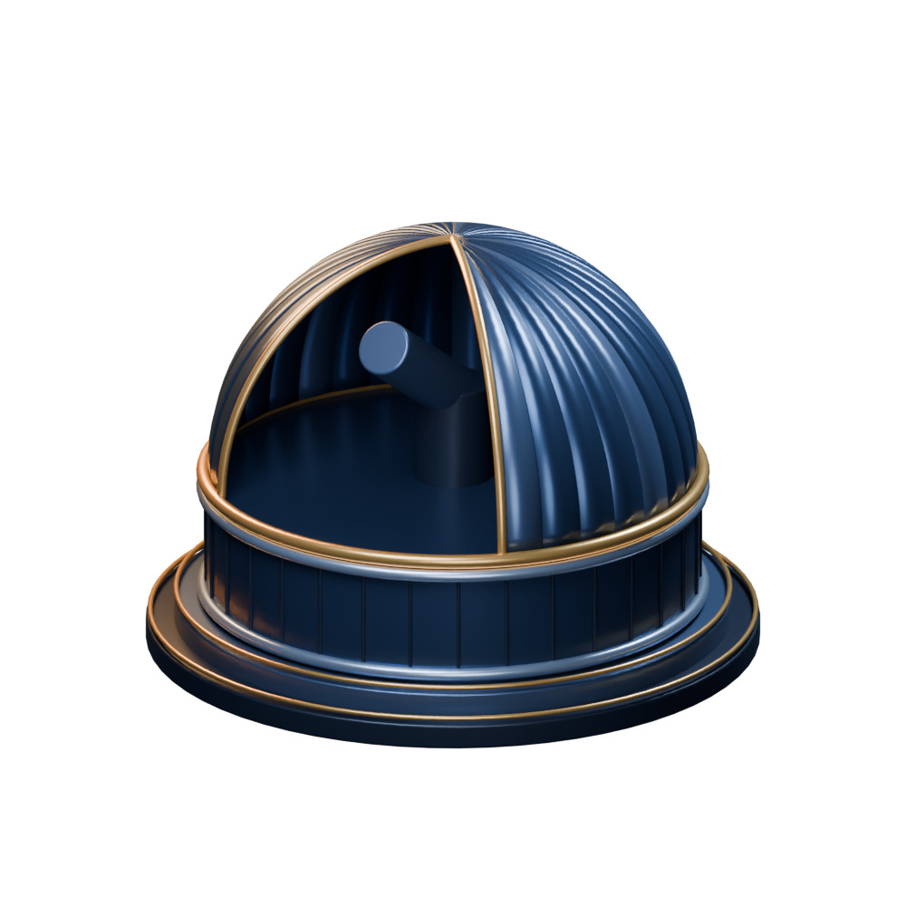
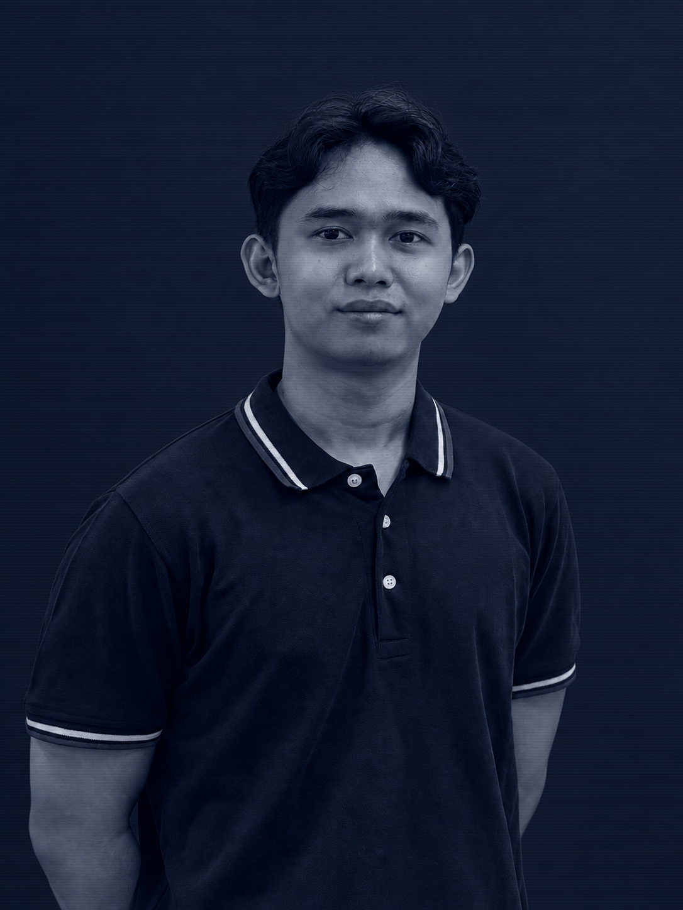

Style study
CrossCheck
Three lenses.One target.

Automated web QA across browsers, screen sizes and user roles. Reproducible issues, with evidence.
Review the styleDRAFT / Visual and copy approval pending
A closer look.
Review the dome, the instrument, the portrait and the proposed visual identity.


Night, with a signal.
Type, in context.
Review notes and copy source
This is a static mobile style study. All proposed copy is DRAFT. Fonts and colors follow the Phase 0 palette proposal.
CrossCheck wording is adapted from the capability dossier, one-sentence pitch and test matrix. The three lenses represent Chromium, Firefox and WebKit.
The portrait was cropped and edited with AI to remove background signage while keeping both shoulders, then given a navy duotone treatment. Please check likeness before approving.
No approval is recorded by opening this page. Approval must be stated by the owner.